So far every model in the book read and wrote only text. This chapter adds a second kind of data, images. First it shows how a Vision Transformer (ViT) turns a picture into "tokens": it cuts the image into small square patches and embeds each patch, so the normal Transformer encoder can read it. Then it uses that trick to build CLIP, an embedding model that puts images and captions into the same vector space, so "a puppy playing in the snow" lands right next to a photo of one; you try it with OpenCLIP and sentence-transformers. Finally it shows BLIP-2, which gives an existing LLM eyes without retraining it: a small trainable bridge (the Q-Former) turns image features into "soft visual prompts" the frozen LLM can read. You end by captioning a supercar and an inkblot, and chatting with the model about a picture.
The chapter is one chain: LLMs only read text → find a way to turn images into token-like vectors → use that to compare images and text (embeddings) → then use it to let an LLM talk about images (generation). Each orange box is the idea the next row builds on.
When you think of large language models (LLMs), "multimodal" is not the first word that comes to mind. They are language models, after all. But a model becomes much more useful if it can handle kinds of data other than text. For example, it is very handy if a language model can glance at a picture and answer questions about it.
Each type of data (text, images, audio, video, sensor readings) is called a modality. A model that can handle more than one modality, such as text and images, is called multimodal.
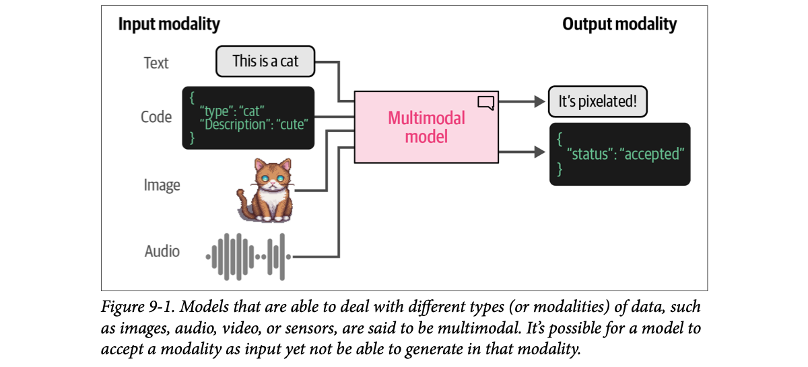
How to read this figure. On the left are four input modalities: the text "This is a cat", a piece of code (a JSON object {"type": "cat", "Description": "cute"}), a pixel-art image of a cat, and an audio waveform. All four wires go into one pink box, the multimodal model. On the right are the output modalities: a text reply ("It's pixelated!") and a JSON reply ({"status": "accepted"}). Notice what is missing on the right: no image and no audio come out. That is the caption's key point: a model can accept a modality as input without being able to generate it. Every model in this chapter is like that: images go in, only text (or vectors) come out.
Why bother? The book points out that LLMs have already shown all kinds of emerging behaviours (abilities nobody trained for directly): generalization, reasoning, arithmetic, linguistics. As models grow larger and smarter, their skill sets grow too (footnote 1: Jason Wei et al., "Emergent abilities of large language models", 2022). The ability to receive and reason about multimodal input might increase this further and unlock abilities that were previously locked away.
In practice, language does not live in a vacuum. When you speak, your body language, facial expressions and intonation all add meaning to the words. The same holds for LLMs: if they can reason about multimodal information, their abilities might grow, and we can use them for new kinds of problems.
Roadmap of the chapter (as the book states it): first, how images become numbers, using an adaptation of the original Transformer. Then, how LLMs can be extended to vision tasks using that Transformer.
Pick a model from this chapter and see which modalities go in and come out. (The rows are taken from what the chapter shows each model doing.)
A phone call versus a video call with your mother. On the phone she hears your words and tone. On video she also sees your face and knows at once you have not slept. Same words, more information, better answer. A text-only LLM is on the phone; a multimodal LLM is on video. Where it breaks: your mother can also send you a photo back; most models in this chapter can look but cannot draw (they only output text).
An LLM only ever works on vectors (embeddings). Text becomes vectors through a tokenizer plus an embedding table. To add a modality, you need a second road that turns that modality into vectors the same model can use. The whole chapter is about building that road for images: first for an encoder (ViT), then into a shared embedding space (CLIP), then into a generative LLM's input (BLIP-2).
"What does multimodal mean, and is GPT-style image input the same as image generation?" Say: "A modality is a data type like text, image or audio. A multimodal model handles more than one. Input and output are separate: many vision-language models take images in but only produce text. Image generation, like stable diffusion, is a different model family that is often driven by a multimodal embedding such as CLIP's." For voice agents this is the same idea with audio as the extra modality.
Throughout the book, Transformer-based models have done well on many language tasks: classification, clustering, search and generation. So it is not surprising that researchers tried to carry that success over to computer vision (getting computers to understand images).
Their method is the Vision Transformer (ViT). It has been shown to do tremendously well on image recognition compared with the previous default, convolutional neural networks (CNNs) (footnote 2: Alexey Dosovitskiy et al., "An image is worth 16x16 words: Transformers for image recognition at scale", 2020). Like the original Transformer, ViT turns unstructured data (here an image) into representations (numbers) that can be used for tasks such as classification.
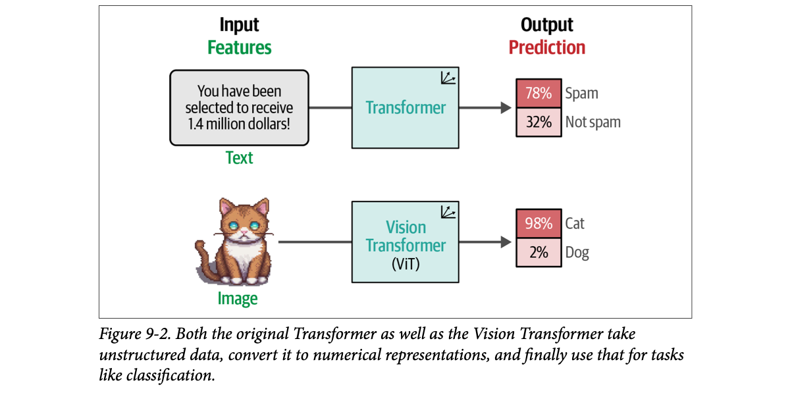
How to read this figure. Two parallel rows, read left to right: Input features → model → output prediction. Top row: a text "You have been selected to receive 1.4 million dollars!" goes through a normal Transformer and comes out as a spam score (78% spam, 32% not spam). Bottom row: a cat picture goes through a Vision Transformer (ViT) and comes out as 98% cat, 2% dog. The point is symmetry: same kind of box, same kind of output, only the input type differs. (The book's spam numbers add up to 110%; they are just illustrative, not real probabilities.)
ViT relies on one important part of the Transformer: the encoder. As Chapter 1 showed, the encoder turns textual input into numerical representations before they go to the decoder. But before the encoder can do anything, the text has to be tokenized.
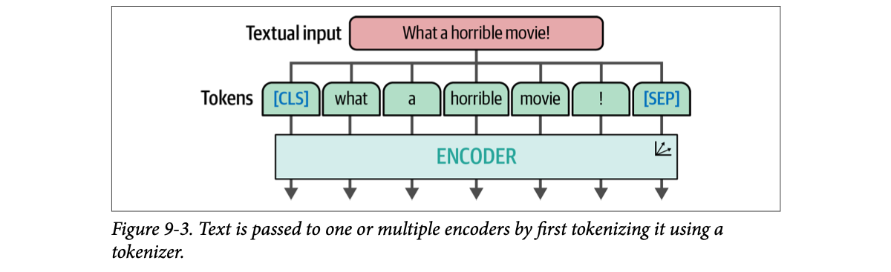
How to read this figure. The textual input "What a horrible movie!" is split into tokens: [CLS], what, a, horrible, movie, !, [SEP]. The blue ones are special tokens: [CLS] (classification token, its output is often used to represent the whole input) and [SEP] (separator, marks the end). Each token goes down into the encoder, and one vector comes out per token (the arrows at the bottom). Keep this picture in mind: ViT will copy it exactly, but with image pieces instead of words.
A sorting clerk at a post office who only knows how to read envelopes (text). ViT is the trick of putting every parcel (image) into an envelope with a label, so the same clerk can sort parcels too, without retraining the clerk's whole method. Where it breaks: the "label" for an image piece is not a word from a dictionary; it is computed fresh for every patch (plate 4).
CNNs bake in assumptions about images (nearby pixels matter most, slide the same filter everywhere). The Transformer's encoder has none of those built in: it uses attention so every piece can look at every other piece. All it needs is a sequence of vectors. If you can turn an image into a sequence of vectors, the same machinery works. That is the whole ViT idea, and the next two plates show how.
"How does a Transformer process images?" Say: "The Vision Transformer cuts the image into fixed-size patches, flattens each patch and linearly projects it into an embedding, adds a class token, and feeds the sequence to a standard Transformer encoder. After that point it is treated exactly like a sequence of text tokens. It beat CNNs on image recognition, which is why it became the default image encoder in CLIP and in vision-language models."
An image is not made of words, so the text tokenization process cannot be used on it. Instead, the ViT authors invented a way to "tokenize" images into "words", which let them reuse the original encoder unchanged.
Imagine a picture of a cat. It is made of pixels, say 512 × 512 pixels. One single pixel tells you almost nothing. But when you group patches of pixels together, you slowly start to see more: an ear, an eye, a paw.
ViT uses exactly that idea. Instead of splitting text into tokens, it splits the image into patches (smaller sub-images): it cuts the picture into pieces horizontally and vertically.
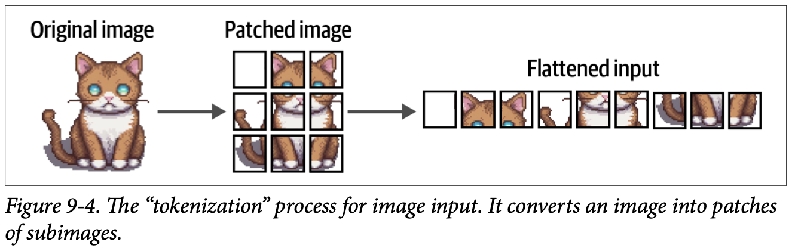
How to read this figure. Three stages, left to right. Original image: the whole cat. Patched image: the same cat cut into a 3 × 3 grid, nine squares. Flattened input: the nine squares laid out in one row, read like a book (top-left, top-middle, top-right, then the next row…). That row is the image's "sentence", and each square is one "word". Note the first square is empty background: background patches still become tokens.
Just as text becomes tokens of text, an image becomes patches of image. The flattened row of patches can be thought of as the tokens of a piece of text.
Important size detail: the book's pictures use 3 × 3 patches only for illustration. The original ViT used 16 × 16 patches (16 × 16 pixels each). That is where the paper's name comes from: "An Image is Worth 16x16 Words."
Choose an image size and a patch size. The grid shows the patches; the readout counts the tokens the encoder will see. 512 × 512 is the book's cat; 224 × 224 is the size CLIP and BLIP-2 resize to later (plates 8 and 15).
Arithmetic from the book's own numbers. The "+1" is the [CLASS] token drawn in Figure 9-5. Pixel values per patch = side × side × 3 colour channels (RGB). The model name in plate 8, clip-vit-base-patch32, means 32 × 32 patches.
A jigsaw puzzle of a Taj Mahal poster. One tiny jigsaw piece is meaningless alone, but lay all 9 (or 196) pieces in order and the picture is there. ViT reads the pieces in a fixed order, like reading a train's coaches from engine to guard van. Where it breaks: jigsaw pieces have unique shapes that tell you where they go; ViT patches are all square, so their position must be told to the model (Beyond the book: ViT adds a learned position embedding to each patch).
Patches trade detail for length. Attention cost grows with the square of the sequence length. Making each pixel a token would give 512 × 512 = 262,144 tokens, far too many. 16 × 16 patches on a 224 × 224 image give only 196 tokens, a normal sentence length. Bigger patches mean fewer tokens (cheaper) but coarser detail.
"Why patches and not pixels?" Say: "Self-attention is quadratic in sequence length. A pixel-level sequence would be hundreds of thousands of tokens. Patching a 224 × 224 image into 16 × 16 patches gives 196 tokens, which is cheap, and each patch carries local structure that a single pixel can't." Image tokens also count toward context and cost in vision LLM APIs, the same way text tokens do.
Here is a key difference from text. A text tokenizer gives each token an ID from a fixed vocabulary (in CLIP's tokenizer, plate 8, "puppy" is always 6829). You cannot do that for patches: a given patch of pixels will rarely appear in any other image, so there is no reusable "vocabulary" of patches.
Instead, the patches are linearly embedded: each patch's pixel values are multiplied by a learned weight matrix (a linear projection) to produce a vector, a patch embedding. These embeddings are the input of the Transformer. That way, image patches are treated the same way as tokens.
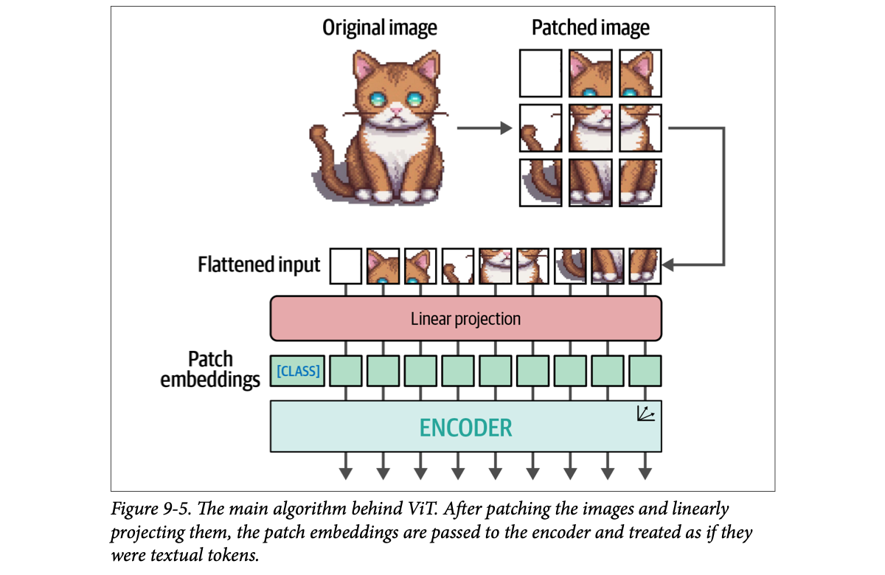
How to read this figure. Top: original image → patched image (3 × 3). The arrow on the right brings the patches down into the flattened input row (9 squares). Each square goes through the pink Linear projection bar and comes out as a green square, its patch embedding. At the far left of the embedding row there is an extra one labelled [CLASS], a special learnable token with no patch behind it, just like [CLS] in Figure 9-3. Then all 10 vectors enter the ENCODER, and one vector comes out per position. Compare it with Figure 9-3: the bottom half is identical. Only the top (how you get the vectors) changed.
What makes this so interesting: the moment the embeddings enter the encoder, they are treated as if they were textual tokens. From that point on, there is no difference in how text or images are trained.
Because of this similarity, ViT is often used to make all kinds of language models multimodal. One of the most straightforward ways is during the training of embedding models, which is the next section.
A tiny 2 × 2 grey-scale "patch" (4 pixel values) is multiplied by a 4 × 3 weight matrix to get a 3-number embedding. Drag the pixel brightness and watch the embedding change. Real ViT does the same with 16 × 16 × 3 = 768 numbers in and (for ViT-Base, Beyond the book) 768 numbers out.
Weights are invented (modelled). In a real model they are learned during training, and the same matrix is used for every patch.
A UPI QR code at a kirana shop. Every shop's QR is different, so there is no "dictionary" of QR codes, but your phone runs the same scanning rule on any QR and turns it into a usable payment ID. The linear projection is that one scanning rule applied to every patch. Where it breaks: a QR decodes to an exact, discrete ID; a patch becomes a continuous vector, where similar-looking patches get similar vectors.
Text embedding = look up a row in a table by token ID. Patch embedding = compute a vector from the pixels with one matrix multiply. Both produce a sequence of same-sized vectors, which is all the encoder ever sees. That shared interface is why "after the encoder there is no difference".
"Why can't images use a vocabulary like text?" Say: "Text has a finite set of recurring tokens, so you can store one learned vector per ID. Image patches are continuous and almost never repeat exactly, so ViT computes the embedding with a learned linear projection of the raw pixels instead of a lookup table."
In earlier chapters, embedding models captured the meaning (semantic content) of text such as papers and documents. Those embeddings let us find similar documents, classify text, and even do topic modeling.
Embeddings are often an important driver behind LLM applications. They are an efficient way to capture large-scale information and to search for the "needle in the haystack".
Until now we only used text-only embedding models. Embedding models that embed only images also exist. But this chapter looks at models that capture both textual and visual representations.
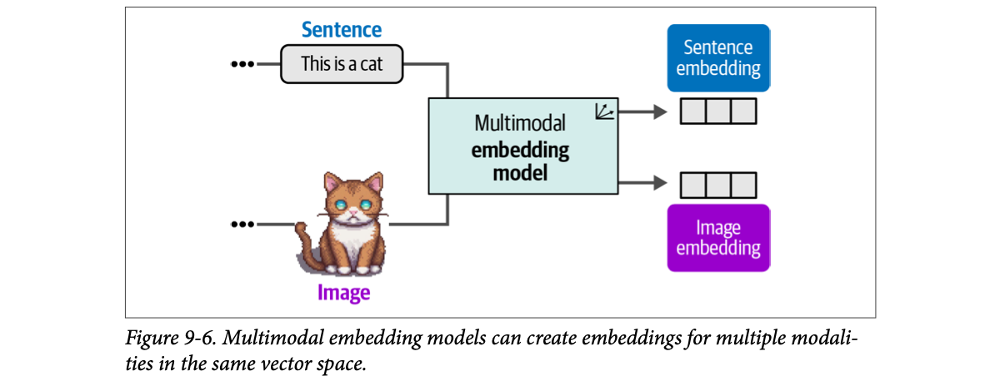
How to read this figure. Two inputs enter one box: the sentence "This is a cat" (blue label) and a cat image (purple label). Out come two embeddings drawn as the same three-cell strip: a sentence embedding and an image embedding. The equal size is the point: both vectors have the same length and live in the same space, so you can compare them directly. The "•••" before each input means "many more sentences / images".
The advantage: because the embeddings lie in the same vector space, you can compare representations across modalities. For example, you can find images from input text: which images are closest to "pictures of a puppy"? The reverse also works: which documents best relate to this image (the book phrases it as a question)?
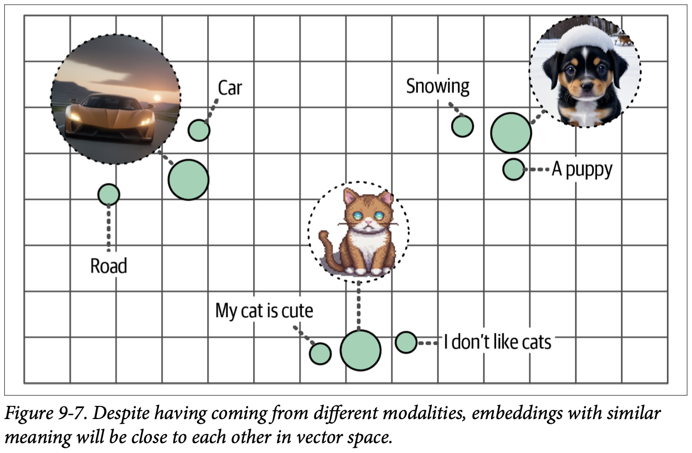
How to read this figure. The grid is a 2-D cartoon of the vector space. Big circles are image embeddings (a supercar at sunset, a puppy in snow, a pixel cat); small circles are text embeddings. Each image sits in a neighbourhood of related words: the car near "Car" and "Road"; the puppy near "Snowing" and "A puppy"; the cat near "My cat is cute" and "I don't like cats". Notice "I don't like cats" is still near the cat: embeddings capture topic, not opinion. Distance on the grid = difference in meaning.
There are several multimodal embedding models, but the best known and (at the time of writing) most used is CLIP: Contrastive Language-Image Pre-training.
Click any point. The page finds its nearest neighbour of the other modality (text → image or image → text), like a text-to-image search. (On this flat toy map "nearest" is plain distance; real systems use cosine similarity on hundreds of dimensions.) Positions are invented 2-D stand-ins laid out like Figure 9-7.
A wedding photo album where every photo has the guest's name tag stuck next to it. Whether you start from the name ("Sharma aunty") or from the face, you land on the same page. A shared vector space is one album for words and photos. Where it breaks: the album has exact pages; vector neighbourhoods are fuzzy, so "a dog" and "a puppy" share a page, which is what you want for search but not for exact lookup.
Two different encoders (one for text, one for images) are trained so that their outputs land in one coordinate system. Nothing forces this by itself: an untrained text encoder and image encoder would produce vectors in unrelated spaces. The training method on the next plates is what lines them up.
"How would you build text-to-image search?" Say: "Use a multimodal embedding model such as CLIP. Embed every image once offline with the image encoder and store vectors in a vector database. At query time, embed the text with the text encoder and do nearest-neighbour search with cosine similarity. Because both encoders share one space, no captions are needed for the images." It is the same pipeline as text RAG, with a different encoder on the document side.
CLIP is an embedding model that computes embeddings for both images and texts. The embeddings lie in the same vector space, so image embeddings can be compared with text embeddings (footnote 3: Alec Radford et al., "Learning transferable visual models from natural language supervision", ICML 2021). That comparison ability makes CLIP and similar models useful for:
Want a new class tomorrow ("a photo of an autorickshaw")? Just add a sentence. No retraining.
A railway enquiry clerk who has never seen your parcel's category list, but can read any label you write. You hand over a parcel and three labels; she says which label fits best. That is zero-shot: the labels are made up at query time. Where it breaks: the clerk knows only what she learned from public signboards; CLIP knows only concepts common in its internet training pairs, so niche labels (a specific factory part) score poorly.
All four uses are the same operation, vector similarity, used differently: classification = similarity to a few label vectors; clustering = groups of nearby vectors; search = nearest neighbours among many vectors; generation = a text vector steering an image generator.
"What is zero-shot classification with CLIP?" Say: "Turn each class into a text prompt, embed the prompts and the image into CLIP's shared space, and pick the class with the highest cosine similarity. New classes only need a new prompt, no labelled data or fine-tuning. Accuracy depends on how well the prompt wording matches what CLIP saw in training."
The CLIP procedure is quite straightforward. Imagine a dataset with millions of images, each with a caption.
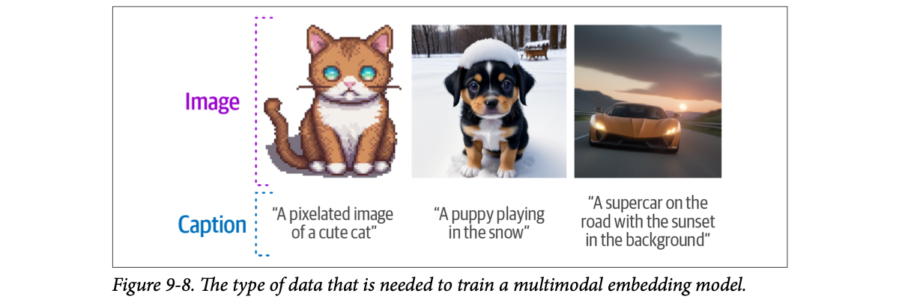
How to read this figure. Each column is one training example: an image (purple bracket) and its caption (blue bracket): "A pixelated image of a cute cat", "A puppy playing in the snow", "A supercar on the road with the sunset in the background". Nobody labels classes; the caption is the label. These same three images return in the hands-on part (plate 8).
From this dataset CLIP makes two representations for each pair: one for the image and one for its caption. It uses a text encoder for text and an image encoder for images.
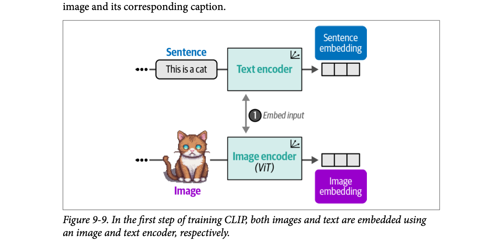
How to read this figure. Step ① "Embed input". Top lane: sentence → Text encoder → sentence embedding. Bottom lane: image → Image encoder (ViT) → image embedding. Two separate networks, one per modality. The image encoder is a ViT, which is why plates 2–4 came first.
The pair of embeddings is compared with cosine similarity. As Chapter 4 showed, cosine similarity is the cosine of the angle between two vectors: the dot product of the embeddings divided by the product of their lengths.
When training starts, the similarity between an image embedding and its caption's embedding is low, because the two encoders are not yet optimized to share a vector space. During training we optimize the similarity: maximize it for similar image/caption pairs and minimize it for dissimilar pairs.
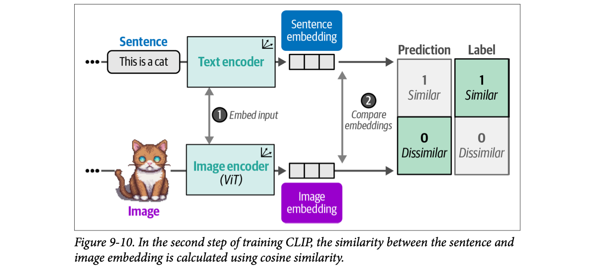
How to read this figure. Step ② "Compare embeddings" is added. On the right are two columns. Prediction: the model currently says "0 Dissimilar" (highlighted green). Label: the truth is "1 Similar" (highlighted green), because this caption really describes this image. The mismatch between the two columns is the error that training will fix.
After computing the similarity, the model is updated, and the process starts again with new batches of data and updated representations. This method is called contrastive learning; Chapter 10 goes deep into how it works, when you build your own embedding model.
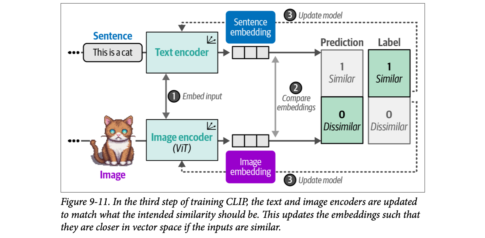
How to read this figure. Step ③ "Update model": dashed arrows run from the label back into both encoders. Both the text encoder and the image encoder change their weights, so next time this pair's embeddings come out closer. Steps ①→②→③ repeat over millions of pairs.
Eventually we expect the embedding of a cat image to be similar to the embedding of the phrase "a picture of a cat." To make the representations as accurate as possible, negative examples (images and captions that are not related) must also be included in training (more in Chapter 10). Modeling similarity is not only knowing what makes things similar, but also what makes them different.
A batch holds the three pairs from Figure 9-8. Rows are captions, columns are images. The diagonal cells are the true pairs (positives); off-diagonal cells are negatives. Step through training and watch the diagonal rise and the rest fall.
Scores are modelled. A batch of N pairs gives N positives and N² − N negatives for free, which is why CLIP-style training needs no extra negative labelling (Beyond the book: CLIP's paper trained with very large batches).
Two 2-D vectors. Drag the angles; the readout does the book's formula: dot product divided by product of lengths.
Change only the length: cosine stays the same. That is why cosine compares direction (meaning), not size.
A school sports day "find your partner" game. Each child holds a photo or a caption card. The teacher (training) keeps nudging the right pairs to stand together and wrong pairs to step apart. After many rounds, every photo-holder stands next to its caption-holder. Where it breaks: children move in a playground; embeddings move in a space with hundreds of dimensions (512 for the CLIP model in plate 8), and it is the encoders, not the points, that are changed.
Without negatives, the easiest way to make every pair "similar" is to map everything to the same point (collapse). Negatives force the model to keep different things apart, so the space keeps meaning. Within one batch, every non-matching caption is a free negative for each image, so the model learns both "this goes with that" and "this does not go with those".
"Explain contrastive learning in CLIP." Say: "Take a batch of image–caption pairs. Encode images with a ViT and captions with a text encoder, compute all pairwise cosine similarities, and train both encoders so the true pairs score high and all mismatched pairs score low. The negatives come free from the other items in the batch. The result is a shared space where text and image of the same thing are close."
The examples use models from OpenCLIP, the open source variant of CLIP. Using OpenCLIP, or any CLIP model, boils down to two things: processing the text and image inputs before passing them to the main model.
The example image is one seen before (Figure 9-7, 9-8): an AI-generated image (made with stable diffusion) of a puppy playing in the snow.
from urllib.request import urlopen
from PIL import Image
# Load an AI-generated image of a puppy playing in the snow
puppy_path = "https://raw.githubusercontent.com/HandsOnLLM/Hands-On-Large-Language-Models/main/chapter09/images/puppy.png"
image = Image.open(urlopen(puppy_path)).convert("RGB")
caption = "a puppy playing in the snow"urlopen downloads the file; PIL.Image.open reads it; .convert("RGB") makes sure it has exactly three colour channels (a PNG can have a fourth, transparency channel, which the model does not expect).
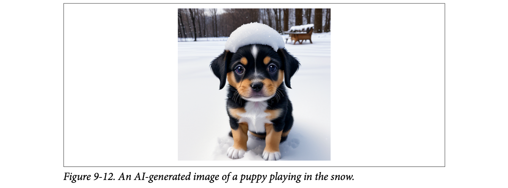
How to read this figure. Just the raw input: a square, colourful, 512 × 512 image (the book gives its size on the next page). Keep its look in mind; Figure 9-13 shows what the model actually receives after preprocessing.
Since we have a caption for this image, OpenCLIP can embed both. We load three things:
from transformers import CLIPTokenizerFast, CLIPProcessor, CLIPModel
model_id = "openai/clip-vit-base-patch32"
# Load a tokenizer to preprocess the text
clip_tokenizer = CLIPTokenizerFast.from_pretrained(model_id)
# Load a processor to preprocess the images
clip_processor = CLIPProcessor.from_pretrained(model_id)
# Main model for generating text and image embeddings
model = CLIPModel.from_pretrained(model_id)The model id reads as: OpenAI's CLIP, image encoder = ViT, "base" size, 32 × 32-pixel patches. All three objects come from the Hugging Face transformers library and are downloaded by the same id so they match each other.
# Tokenize our input
inputs = clip_tokenizer(caption, return_tensors="pt")
inputs
# {'input_ids': tensor([[49406, 320, 6829, 1629, 530, 518, 2583, 49407]]),
# 'attention_mask': tensor([[1, 1, 1, 1, 1, 1, 1, 1]])}
# Convert our input back to tokens
clip_tokenizer.convert_ids_to_tokens(inputs["input_ids"][0])
# ['<|startoftext|>', 'a</w>', 'puppy</w>', 'playing</w>',
# 'in</w>', 'the</w>', 'snow</w>', '<|endoftext|>']return_tensors="pt" asks for PyTorch tensors. The output is a dictionary with input_ids (the token IDs) and an attention_mask (all 1s: every token is real, none is padding). convert_ids_to_tokens turns the IDs back into readable tokens.
What to notice:
</w> marks "end of word").<|startoftext|>, <|endoftext|>) to separate it from a potential image embedding.[CLS] token is missing. In CLIP, the [CLS] token is actually used to represent the image embedding.# Create a text embedding
text_embedding = model.get_text_features(**inputs)
text_embedding.shape # torch.Size([1, 512])**inputs unpacks the dictionary into keyword arguments (input_ids=…, attention_mask=…). The result is one embedding of 512 values for this single string (shape [1, 512]: batch of 1, 512 numbers).
Like the text, the image must be preprocessed first, because the model expects certain characteristics such as size and shape. We use the processor created earlier:
# Preprocess image
processed_image = clip_processor(
text=None, images=image, return_tensors="pt"
)["pixel_values"]
processed_image.shape # torch.Size([1, 3, 224, 224])text=None: the CLIP processor can handle text and images together; here we pass only the image. ["pixel_values"] picks the image tensor out of the returned dictionary.
The original image was 512 × 512 pixels. Preprocessing reduced it to 224 × 224, the size the model expects. The shape reads: 1 image, 3 colour channels (red, green, blue), 224 rows, 224 columns. The book then visualizes the result:
import torch
import numpy as np
import matplotlib.pyplot as plt
# Prepare image for visualization
img = processed_image.squeeze(0)
img = img.permute(*torch.arange(img.ndim - 1, -1, -1))
img = np.einsum("ijk->jik", img)
# Visualize preprocessed image
plt.imshow(img)
plt.axis("off")squeeze(0) drops the batch dimension → [3, 224, 224]. permute(2, 1, 0) reverses the axes → [224 (width), 224 (height), 3]. einsum("ijk->jik") swaps the first two axes back → [height, width, 3], the layout matplotlib's imshow wants (channels last).
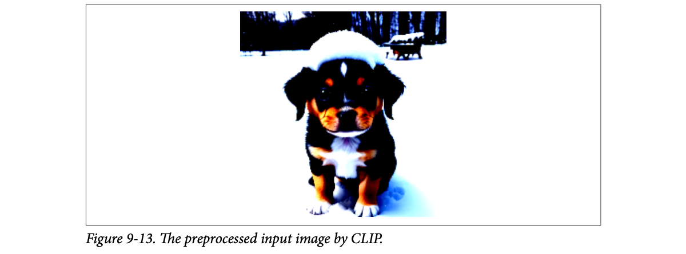
How to read this figure. Same puppy, but now 224 × 224 and with strange colours: the snow is blown-out white and the shadows are very dark. This is what the model "sees". The book only says it is the preprocessed image. Beyond the book: the odd colours come from normalization: CLIP's processor subtracts a per-channel mean and divides by a standard deviation, so pixel values are no longer in the 0–1 range that imshow expects; matplotlib clips them, which looks like extreme contrast. The content (puppy, snow, bench) is all still there.
# Create the image embedding
image_embedding = model.get_image_features(processed_image)
image_embedding.shape # torch.Size([1, 512])The image embedding has the same shape as the text embedding: 512 values. This matters: it is what allows comparing them.
# Normalize the embeddings
text_embedding /= text_embedding.norm(dim=-1, keepdim=True)
image_embedding /= image_embedding.norm(dim=-1, keepdim=True)
# Calculate their similarity
text_embedding = text_embedding.detach().cpu().numpy()
image_embedding = image_embedding.detach().cpu().numpy()
score = np.dot(text_embedding, image_embedding.T)
score # array([[0.33149648]], dtype=float32).norm(dim=-1, keepdim=True) is each vector's length; dividing by it makes the vector length 1 (normalizing)..detach().cpu().numpy(): stop tracking gradients, move to CPU memory, convert to a NumPy array so np.dot can use it. .T transposes [1, 512] to [512, 1] so the result is a 1 × 1 matrix.The score is 0.33. On its own that is hard to interpret: we don't know what the model considers low or high. So the book extends the example to three images and three captions:
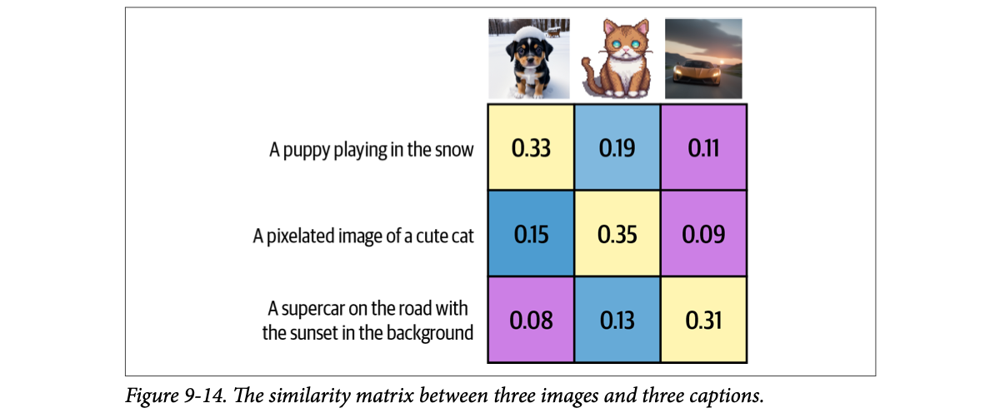
How to read this figure. Columns are images (puppy, pixel cat, supercar). Rows are captions. Each cell is the cosine similarity of that caption with that image. The yellow diagonal (0.33, 0.35, 0.31) holds the correct pairs, and in every row and every column the diagonal is the biggest number. The off-diagonal cells range from 0.08 to 0.19. So 0.33 is high: CLIP's similarity scores live in a narrow band, and you should read them relatively (compare against alternatives), not as absolute percentages.
Click a cell, or choose a direction. Green borders mark the best match. "Image → caption" is image captioning by retrieval; "caption → image" is text-to-image search.
Exam marks out of a strict examiner who never gives above 40. A 33 looks like a fail, until you see everyone else scored 10–19. Then 33 is topping the class. CLIP's 0.33 is like that. Where it breaks: an examiner's scale may shift paper to paper; CLIP's scale is fixed for a given model, so you can tune a threshold once, but only per model.
Training only taught CLIP to rank the true pair above the others; it never asked for the true pair to reach any particular absolute value. So absolute scores cluster in a narrow range and only the ranking is reliable. That's why retrieval (top-k) and classification (argmax) work well, while fixed thresholds need calibration on your own data.
"A CLIP similarity of 0.33: is that good?" Say: "You can't tell in isolation. Contrastive training only enforces ranking, so cosine scores live in a narrow band. Compare against alternatives (other captions or images) or calibrate a threshold on labelled data. In the book's 3 × 3 example the true pairs score 0.31–0.35 and the wrong ones 0.08–0.19." Same lesson as setting a relevance cutoff in a RAG retriever.
</w> style vs GPT-2's Ġ style in plate 16).The sentence-transformers library implements a few CLIP-based models that make creating embeddings much easier. It takes only a few lines:
from sentence_transformers import SentenceTransformer, util
# Load SBERT-compatible CLIP model
model = SentenceTransformer("clip-ViT-B-32")
# Encode the images
image_embeddings = model.encode(images)
# Encode the captions
text_embeddings = model.encode(captions)
#Compute cosine similarities
sim_matrix = util.cos_sim(
image_embeddings, text_embeddings
)"clip-ViT-B-32": the same family as before (ViT-Base, 32-pixel patches), packaged to be SBERT-compatible (SBERT = Sentence-BERT, the sentence-transformers model format).model.encode(...) does all the work of plate 8 in one call: the same encode method takes a list of PIL images or a list of strings, and handles tokenizing, resizing and the forward pass. Here images and captions are the lists of three images and three captions behind Figure 9-14 (the book does not print their definition).util.cos_sim(a, b) returns the full matrix of cosine similarities, every image against every caption, so no manual normalizing is needed. The result is the kind of matrix shown in Figure 9-14.| Step | transformers (plate 8) | sentence-transformers |
|---|---|---|
| Load | tokenizer + processor + model (3 objects) | SentenceTransformer("clip-ViT-B-32") (1 object) |
| Text → vector | clip_tokenizer then get_text_features | model.encode(captions) |
| Image → vector | clip_processor then get_image_features | model.encode(images) |
| Compare | normalize by .norm, then np.dot | util.cos_sim |
| Good for | seeing every step, custom control | production code, batching many inputs |
Making chai from scratch (boil water, add leaves, ginger, milk, sugar, strain) versus a chai premix sachet. Same cup, fewer steps. Where it breaks: with the premix you can't easily change one step (a different resize or tokenizer setting); for that you go back to the from-scratch path.
The wrapper detects whether each input is an image or a string and routes it to the right encoder of the same CLIP model. Both outputs land in the same space, so one call to cos_sim compares across modalities.
"How would you quickly prototype image search over a product catalogue?" Say: "Load a CLIP model through sentence-transformers, call encode on all product images in batches, store the vectors in a vector database, and at query time encode the user's text and run cosine top-k. Swap to the lower-level transformers API only if you need custom preprocessing."
Traditionally, text generation models interpret textual representations. Models like Llama 2 and ChatGPT are excellent at reasoning about text and answering in natural language. But they are limited to the modality they were trained on: text. As with multimodal embedding models, adding vision can extend what a model can do.
For a text generation model, we want it to reason about input images. For example: give it a picture of a pizza and ask what ingredients it has. Show it the Eiffel Tower and ask when it was built or where it is. This conversational ability is shown below.
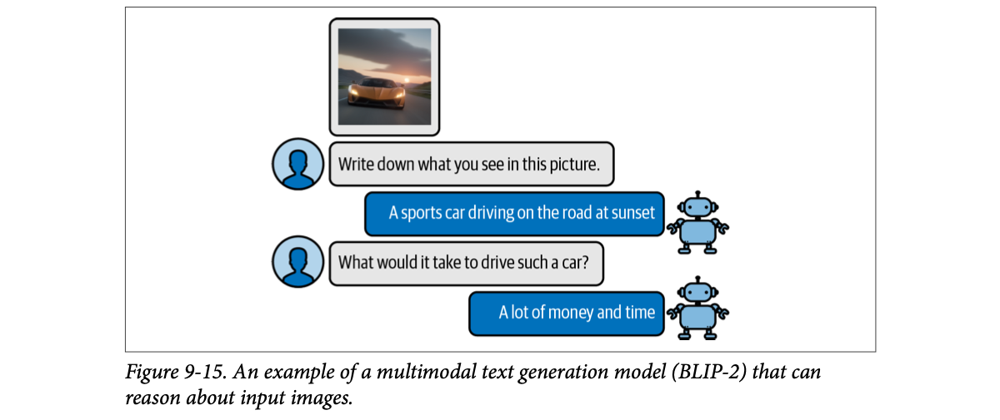
How to read this figure. A chat. At the top is the image (an orange supercar at sunset). User: "Write down what you see in this picture." BLIP-2 (robot): "A sports car driving on the road at sunset". User: "What would it take to drive such a car?" BLIP-2: "A lot of money and time". The second question is not answerable from pixels alone: the model combines what it sees with world knowledge from the LLM. Note: the figure's follow-up question and answer differ from the code run in plate 18 (there the question is "What would it cost me to drive that car?" and the answer is "$1,000,000"). The figure is an illustration; the code output is the actual run.
To bridge the two domains, people have tried to add a form of multimodality to existing models. One such method is BLIP-2: Bootstrapping Language-Image Pre-training for Unified Vision-Language Understanding and Generation 2. BLIP-2 is an easy-to-use, modular technique for adding vision to existing language models.
| Question about a pizza photo | Text LLM | CLIP | BLIP-2 |
|---|---|---|---|
| "Which of these 5 labels fits best?" | ✗ can't see | ✓ similarity ranking | ✓ (by generating) |
| "Describe this picture." | ✗ | ✗ (only scores, no text out) | ✓ caption |
| "What ingredients are on it?" | ✗ | ✗ | ✓ visual question answering |
| "How much would this cost in Mumbai?" | ✗ | ✗ | ~ guesses using LLM knowledge (like the "$1,000,000" answer) |
Rows follow the uses the chapter shows; the pizza/Mumbai wording is our own example.
A brilliant blind professor (the LLM) and a sharp-eyed assistant (the image encoder) who speak different languages. BLIP-2 hires an interpreter who turns what the assistant sees into sentences the professor understands. Where it breaks: the interpreter does not use words; it passes the professor special vectors (soft prompts) that no human could read.
CLIP aligns images and text for comparison; it has no decoder, so it can't write. A generative LLM can write, but only reads token embeddings. Making a text generator multimodal means getting image information into the LLM's input embeddings. BLIP-2's answer is to do that without changing the LLM at all.
"What's the difference between CLIP and a vision-language model like BLIP-2 or LLaVA?" Say: "CLIP is an embedding model: two encoders, one shared space, output is vectors for retrieval or zero-shot classification. A vision-language model feeds image features into a generative LLM so it can caption images and answer questions in free text. VLMs usually reuse a CLIP-like image encoder as their eyes."
Building a multimodal language model from scratch needs huge compute and data: billions of images, texts and image-text pairs. That is not easily feasible.
Instead, BLIP-2 bridges the vision-language gap by building a bridge called the Querying Transformer (Q-Former), which connects a pretrained image encoder and a pretrained LLM (footnote 5: Junnan Li et al., "BLIP-2: Bootstrapping language-image pretraining with frozen image encoders and large language models", ICML 2023).
Because it reuses pretrained models, BLIP-2 only needs to train the bridge. The image encoder and the LLM are not trained from scratch (they stay frozen: their weights don't change). It makes good use of technology and models that already exist.
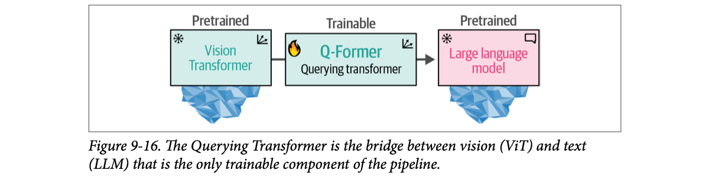
How to read this figure. Three boxes in a line. The snowflake ❄ icon means frozen / pretrained (on the Vision Transformer and the LLM); the icebergs under them hint at how big they are. The flame 🔥 icon means trainable: only the Q-Former in the middle. Data flows left to right: image → ViT → Q-Former → LLM.
To connect the two pretrained models, the Q-Former mimics their architectures. It has two modules that share their attention layers:
The Q-Former is trained in two stages, one for each modality (next two plates).
Click a block to toggle it between frozen ❄ and trainable 🔥. The bar shows what share of all weights you must train. BLIP-2's choice is "only the Q-Former".
Beyond the book, approximate sizes: the BLIP-2 paper reports a Q-Former of about 188M parameters; the model used in plate 14 pairs it with OPT-2.7B (≈2.7B) and a ViT-g image encoder (≈1B). Treat these as rough, for the proportion only.
Connecting a new metro line to an old railway station. You don't rebuild the station or the metro; you build one foot-over-bridge between them. Cheap, quick, and both systems keep running as before. Where it breaks: a foot bridge just carries people as they are; the Q-Former must also translate what crosses it into a form the other side understands.
Freezing means no gradients for the big models: much less GPU memory (no optimizer state for billions of weights), much less data needed, and no risk of damaging what the LLM already knows (forgetting its language skills). The price: the frozen parts can't adapt, so the small bridge must do all the aligning.
"How would you add vision to an existing LLM on a budget?" Say: "Keep a pretrained image encoder and the LLM frozen, and train only a small adapter that maps image features into the LLM's input embedding space, as BLIP-2 does with its Q-Former (or LLaVA with a projection). You train a tiny fraction of the weights, need far less paired data, and the LLM keeps its language ability."
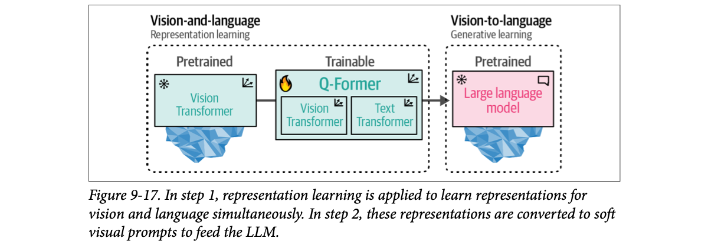
How to read this figure. Two dotted boxes = two training stages. Left: Vision-and-language, representation learning (step 1). It holds the frozen ViT and the trainable Q-Former, which now shows its two inner modules: a Vision Transformer and a Text Transformer (the "Image Transformer" and "Text Transformer" of plate 11). Right: Vision-to-language, generative learning (step 2), which brings in the frozen LLM. The arrow shows step 1's output feeding step 2.
In step 1, image-document pairs are used to train the Q-Former to represent both images and text. These pairs are usually image captions, like the ones used to train CLIP.
The images go into the frozen ViT to extract vision embeddings. Those embeddings are the input of the Q-Former's ViT (its image module). The captions are the input of the Q-Former's Text Transformer.
With these inputs, the Q-Former is trained on three tasks:
The three objectives are jointly optimized to improve the visual representations extracted from the frozen ViT. In a way, we are injecting textual information into the embeddings of the frozen ViT so we can use them in the LLM.
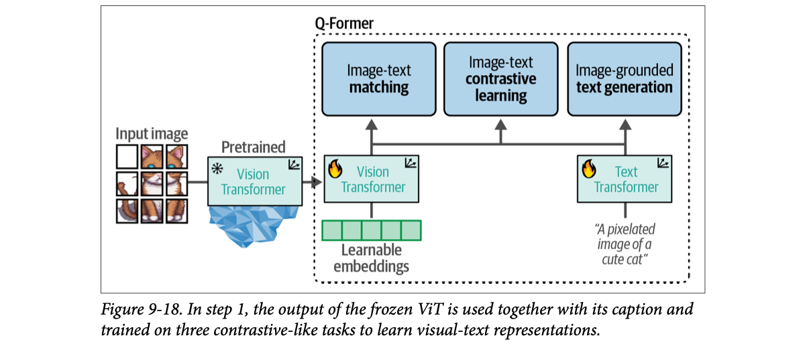
How to read this figure. Left to right: the input image (as patches) → the frozen, pretrained ViT (❄) → into the Q-Former (dotted box). Inside, the Q-Former's Vision Transformer (🔥) takes the ViT output plus a row of green learnable embeddings (a small set of trainable vectors, the "queries" that give the Querying Transformer its name). The Q-Former's Text Transformer (🔥) takes the caption "A pixelated image of a cute cat". A shared line connects both modules up to the three task boxes on top: image-text matching, image-text contrastive learning and image-grounded text generation. The green learnable embeddings are what step 2 will hand to the LLM.
One image (the pixel cat) and three candidate captions. Step through to see what each task asks the Q-Former to do.
Scores are modelled to show what each task rewards.
Training a new tour guide at Hampi. Task 1 (contrastive): match each photo to the right description card from a pile. Task 2 (matching): for one photo and one card, say "yes this fits" or "no". Task 3 (generation): look at a photo and describe it in your own words. A guide who passes all three really understands what they see in words. Where it breaks: the guide learns by practice over weeks; the Q-Former learns all three at once from the same batches (joint optimization).
Each task pushes in a different direction. Contrastive learning gives a coarse "these belong together" alignment. Matching forces fine-grained checking of one pair. Generation forces the image features to carry enough detail to produce words. Together they shape the learnable embeddings into a summary of the image that is already "text-flavoured", which makes step 2 much easier.
"What does the Q-Former learn in stage 1?" Say: "With the image encoder frozen, a set of learnable query embeddings attends to the image features, and the Q-Former is trained jointly on image-text contrastive learning, image-text matching (a binary classifier) and image-grounded text generation. That pulls out the visual information that is most relevant to language, before any LLM is involved."
In step 2, the learnable embeddings from step 1 now contain visual information in the same dimensional space as the matching textual information. These learnable embeddings are passed to the LLM. In a way, they act as soft visual prompts: they condition the LLM on the visual representations extracted by the Q-Former.
Between the Q-Former and the LLM sits a fully connected linear layer (a projection layer). It makes sure the learnable embeddings have the shape the LLM expects.
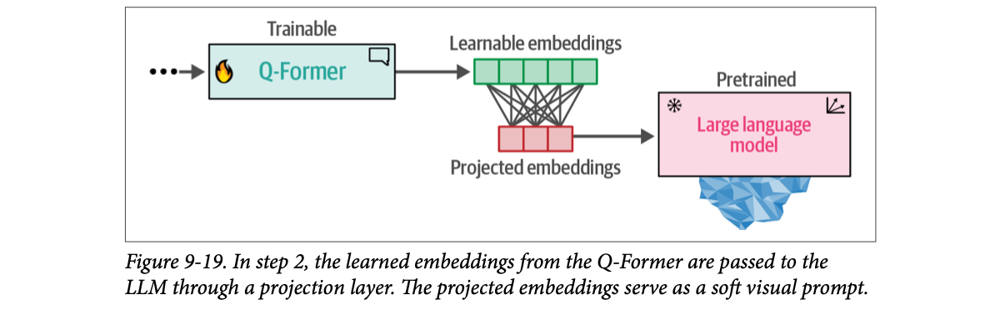
How to read this figure. The Q-Former (🔥) outputs the green learnable embeddings (5 cells drawn). The crossing lines are the fully connected linear layer: every output cell is a weighted mix of every input cell. Out come the red projected embeddings (3 cells drawn, i.e. a different size to show the shape change). Those go straight into the frozen LLM (❄), in place of where token embeddings would go.
Put together, the Q-Former learns visual and textual representations in the same dimensional space, which can then be used as a soft prompt to the LLM. The LLM receives information about the image in a similar way to the context you give it when prompting.
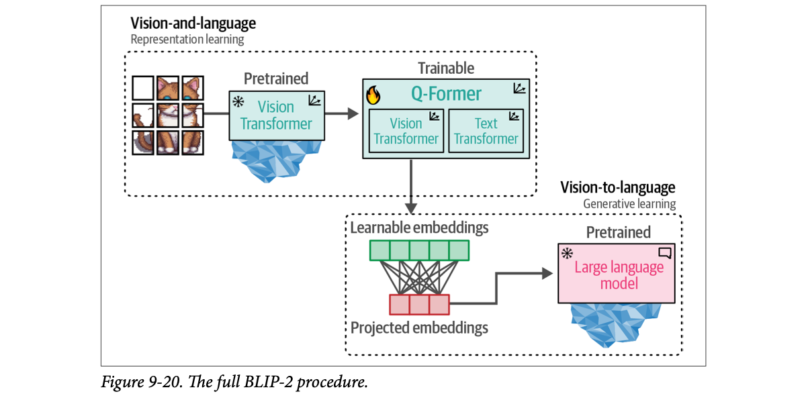
How to read this figure. This is Figure 9-17 with Figure 9-19 attached. Top dotted box (representation learning): image patches → frozen ViT → Q-Former with its Vision and Text Transformers. The arrow down hands the Q-Former's learnable embeddings to the bottom dotted box (generative learning): linear projection → projected embeddings → frozen LLM. Two snowflakes, one flame, plus the projection layer: everything that learns sits between the two frozen giants.
The 224 × 224 input and the question/answer are from the book. Vector counts and sizes are illustrative (Beyond the book: the BLIP-2 paper uses 32 query embeddings; OPT-2.7B's embedding width is 2,560).
Many other visual LLMs with similar processes have appeared since BLIP-2:
Both have different architectures, but both connect pretrained CLIP-like visual encoders with textual LLMs. The goal of these architectures is to project visual features from the input images to language embeddings so they can be used as input to an LLM. Like the Q-Former, they try to bridge the gap between images and text.
Sending a photo to a friend on WhatsApp with no caption versus with a voice note describing it. The soft visual prompt is like a voice note in a "language" only the LLM understands, placed right before your question in the chat. Where it breaks: a voice note is a human description; soft prompt vectors are not words at all and need not match any token in the vocabulary.
An LLM's first layer takes a sequence of vectors. Normally each vector comes from looking up a token ID. Nothing stops you from putting other vectors of the same width in that sequence. "Soft" means they are continuous and learned, not picked from the vocabulary (a "hard" prompt is real tokens). The projection layer exists purely to make the Q-Former's width match the LLM's width.
"How does an image actually get into an LLM?" Say: "An image encoder produces feature vectors; an adapter (BLIP-2's Q-Former plus a linear projection, or a projection in LLaVA) maps them to the LLM's embedding width; those vectors are prepended to the text token embeddings as a soft visual prompt. The LLM then attends to them like any other context." Practical consequence: image tokens consume context window and cost, like text.
Now that we know how BLIP-2 is built, there are many interesting uses for it, including (but not limited to) captioning images, answering visual questions, and even prompting. First, load the model and see how to use it:
from transformers import AutoProcessor, Blip2ForConditionalGeneration
import torch
# Load processor and main model
blip_processor = AutoProcessor.from_pretrained("Salesforce/blip2-opt-2.7b")
model = Blip2ForConditionalGeneration.from_pretrained(
"Salesforce/blip2-opt-2.7b",
torch_dtype=torch.float16
)
# Send the model to GPU to speed up inference
device = "cuda" if torch.cuda.is_available() else "cpu"
model.to(device)"Salesforce/blip2-opt-2.7b": BLIP-2 released by Salesforce, with OPT-2.7B (a 2.7-billion-parameter language model) as its LLM.AutoProcessor picks the right processor class for this model id automatically.Blip2ForConditionalGeneration: the BLIP-2 model with a text-generating head ("conditional" = generation conditioned on the image).torch_dtype=torch.float16: load weights in 16-bit floats, half the memory of 32-bit. Inputs must later be cast to torch.float16 too, which is why every later call ends in .to(device, torch.float16).device: use the GPU ("cuda") if one is available, else the CPU. The GPU speeds up inference.Tip from the book: model.vision_model and model.language_model show you which ViT and which generative model are inside the BLIP-2 model you loaded.
We loaded the two parts of the pipeline: a processor and a model. The processor is comparable to the tokenizer of a language model: it converts unstructured input, such as images and text, into the representations the model expects.
Rough weight memory = parameters × bytes per parameter. Choose a precision.
Modelled. 3.9B ≈ OPT-2.7B + ViT-g + Q-Former (Beyond the book, approximate). Real usage is higher: activations and the CUDA context come on top.
A restaurant kitchen. The processor is the prep counter: it washes, peels and cuts everything to the standard size the cooks expect. The model is the cook. Even a perfect cook can't use a whole unpeeled pumpkin. Where it breaks: a kitchen helper can adapt to odd ingredients; the processor applies fixed rules (like "always 224 × 224") even when they damage the input (next plate).
A processor bundles two preprocessors: an image processor (resize, normalize, make tensors) and a tokenizer (text to IDs). Loading both by the same model id guarantees they match what the model was trained with; mixing a different tokenizer or image size would silently give garbage.
"Why load in float16?" Say: "It halves the weight memory versus float32 with little quality loss for inference, so a ~4B-parameter model fits in about 8 GB of weights instead of 16. You must cast the inputs to the same dtype and device, which is why the code moves inputs with .to(device, torch.float16)."
What does the processor do to images? The book loads a deliberately wide image for illustration, a supercar:
# Load image of a supercar
car_path = "https://raw.githubusercontent.com/HandsOnLLM/Hands-On-Large-Language-Models/main/chapter09/images/car.png"
image = Image.open(urlopen(car_path)).convert("RGB")
imageThe image is 520 × 492 pixels, an unusual format. Now process it:
# Preprocess the image
inputs = blip_processor(image, return_tensors="pt").to(device, torch.float16)
inputs["pixel_values"].shape # torch.Size([1, 3, 224, 224])The result is a 224 × 224 image, quite a bit smaller than the original. It also means every image, whatever its shape, is processed into a square. So be careful with very wide or very tall images: they may get distorted.
Enter an image size. The page shows how the processor (as the book describes it: every shape becomes 224 × 224) scales each side, and draws the before/after shapes.
Assumes a direct resize to 224 × 224, as the book's shape output implies. Beyond the book: some image processors resize the short side then center-crop instead, which cuts off edges rather than distorting.
Fitting a long wedding-hall group photo into a square Instagram frame by squeezing it: everybody suddenly looks tall and thin. Fine for "how many people are there", bad for "is uncle's turban straight". Where it breaks: people notice distortion; the model just silently sees a different image.
The frozen ViT was trained on one input size, so its patch grid (and position information) is fixed. Every image must be forced to that size. Shrinking also throws away detail: a 3024 × 4032 phone photo goes down to about 0.4% of its pixels, so tiny text or small objects can vanish.
"Your vision model misreads small text in screenshots. Why?" Say: "Preprocessing resizes every image to a fixed low resolution, 224 × 224 for this BLIP-2, so fine detail is lost and wide or tall images get distorted. Fixes: crop or tile the region of interest before sending, pad to square instead of stretching, or use a model with higher input resolution."
Next, the processor's text side. First, look at the tokenizer it uses:
blip_processor.tokenizer
# GPT2TokenizerFast(name_or_path='Salesforce/blip2-opt-2.7b', vocab_size=50265,
# model_max_length=1000000000000000019884624838656, is_fast=True,
# padding_side='right', truncation_side='right',
# special_tokens={'bos_token': '</s>', 'eos_token': '</s>', 'unk_token': '</s>', 'pad_token': '<pad>'},
# clean_up_tokenization_spaces=True), added_tokens_decoder={
# 1: AddedToken("<pad>", ...special=True),
# 2: AddedToken("</s>", ...special=True),
# }What this output tells you, piece by piece:
</s> serves as beginning-of-sequence (bos), end-of-sequence (eos) and unknown (unk) token; <pad> is for padding. They are added tokens with IDs 1 (<pad>) and 2 (</s>).Try it on a small sentence: convert to token IDs, then back to tokens.
# Preprocess the text
text = "Her vocalization was remarkably melodic"
token_ids = blip_processor(image, text=text, return_tensors="pt")
token_ids = token_ids.to(device, torch.float16)["input_ids"][0]
# Convert input ids back to tokens
tokens = blip_processor.tokenizer.convert_ids_to_tokens(token_ids)
tokens
# ['</s>', 'Her', 'Ġvocal', 'ization', 'Ġwas', 'Ġremarkably', 'Ġmel', 'odic']Note the processor is called with both the image and the text; we keep only input_ids. The sequence starts with </s> (the bos token). Words split into pieces: "vocalization" → Ġvocal + ization, "melodic" → Ġmel + odic.
The strange Ġ symbol at the start of some tokens is actually a space. An internal function takes characters in certain code points and moves them up by 256 to make them printable. So the space (code point 32) becomes Ġ (code point 288).
For readability, replace it with an underscore:
# Replace the space token with an underscore
tokens = [token.replace("Ġ", "_") for token in tokens]
tokens
# ['</s>', 'Her', '_vocal', 'ization', '_was', '_remarkably', '_mel', 'odic']Now it's clear: the underscore marks the beginning of a word. That way, words made of several tokens can be recognized (a token without the mark continues the previous word).
Type anything. Each character is shown with its code point; characters in the shifted range (like space, code point 32) are shown as the printable character 256 places higher, as the book describes. This only shows the character mapping; it does not do the real GPT-2 splitting into sub-words.
Beyond the book: GPT-2's byte-level mapping shifts the non-printable and whitespace bytes (0–32, 127–160, 173) up to code points from 256 upwards; the common space case lands exactly at 32 + 256 = 288 = Ġ. Newline (10) becomes Ċ (266). This demo applies the "+256" rule to code points 0–32 only, matching the book's explanation.
Railway reservation charts that print a "▲" before a passenger's name to mean "new booking starts here", because a blank space would get lost when the chart is folded. Ġ is that visible marker for an invisible space. Where it breaks: the chart marker is a design choice for humans; Ġ is a technical side-effect of making every byte printable for the tokenizer's vocabulary file.
GPT-2-style tokenizers work on bytes, and store their vocabulary as readable strings. Bytes like space or newline would be invisible or break the file, so they are remapped to visible characters. Keeping the space attached to the start of the next word means "was" at a word start and "was" inside a word are different tokens, and decoding can rebuild the exact original spacing.
"What's the Ġ in GPT-2 tokens?" Say: "It's the space character. GPT-2's byte-level BPE remaps non-printable bytes to printable code points by adding 256, so space (32) shows as Ġ (288). Tokens starting with Ġ begin a new word; tokens without it continue the previous one. CLIP's tokenizer marks word ends with </w> instead."
</w> end-of-word marker.The most straightforward use of a model like BLIP-2 is to create captions for images you have. You might be a store that wants descriptions of its clothing, or a photographer with no time to label the 1,000+ pictures of a wedding by hand.
Captioning closely follows the preprocessing: the image becomes pixel values the model can read; these go into BLIP-2, which turns them into soft visual prompts; the LLM uses those to decide on a fitting caption.
# Load an AI-generated image of a supercar
image = Image.open(urlopen(car_path)).convert("RGB")
# Convert an image into inputs and preprocess it
inputs = blip_processor(image, return_tensors="pt").to(device, torch.float16)
image
# Generate image ids to be passed to the decoder (LLM)
generated_ids = model.generate(**inputs, max_new_tokens=20)
# Generate text from the image ids
generated_text = blip_processor.batch_decode(
generated_ids, skip_special_tokens=True
)
generated_text = generated_text[0].strip()
generated_text
# an orange supercar driving on the road at sunsetmodel.generate(**inputs, max_new_tokens=20): only an image is given (no text), so BLIP-2 writes a caption, stopping after at most 20 new tokens. It returns token IDs.batch_decode(..., skip_special_tokens=True): turn the IDs back into text and drop special tokens like </s>. It returns a list (one string per image); [0] takes the first and .strip() removes stray spaces.Result: "an orange supercar driving on the road at sunset". A perfect description of the image.
Captioning is a great way to learn the model before moving to harder uses. Try it on several images to see where it works well and where it does poorly. Domain-specific images, such as particular cartoon characters or imaginary creations, may fail, because the model was trained on largely public data.
The book ends this use case with an image from the Rorschach test, an old psychological experiment that tests how a person perceives inkblots (footnote 8: Roy Schafer, Psychoanalytic Interpretation in Rorschach Testing: Theory and Application, 1954). What someone sees in an inkblot supposedly tells you something about their personality. It is quite a subjective test, which makes it more fun.
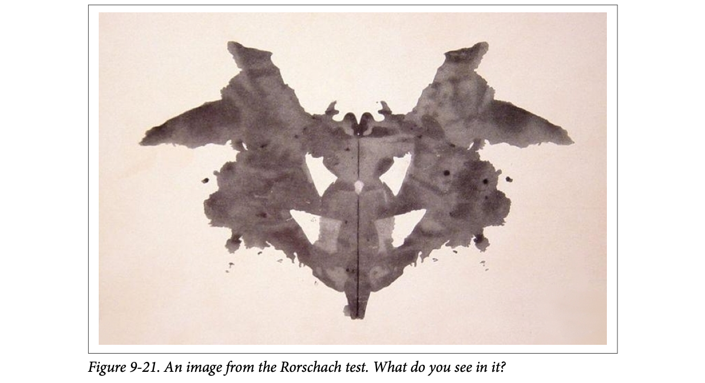
How to read this figure. A mirror-symmetric grey ink shape. The two upper-side shapes look like spread wings, and the central body suggests a creature, but there is no "right answer": that is the point of the test. It makes a good probe of what the model "projects" onto an ambiguous image.
# Load Rorschach image
url = "https://upload.wikimedia.org/wikipedia/commons/7/70/Rorschach_blot_01.jpg"
image = Image.open(urlopen(url)).convert("RGB")
# Generate caption
inputs = blip_processor(image, return_tensors="pt").to(device, torch.float16)
generated_ids = model.generate(**inputs, max_new_tokens=20)
generated_text = blip_processor.batch_decode(
generated_ids, skip_special_tokens=True
)
generated_text = generated_text[0].strip()
generated_text
# a black and white ink drawing of a batThe caption: "a black and white ink drawing of a bat". The authors can see why the model would say that, and ask (playfully) what it says about the model, since this is a Rorschach test.
A wedding photographer's new intern who has seen thousands of public wedding photos. Hand over 1,000 shots and you get "bride and groom on a stage" for each, fast. Ask for "Ravi's cousin from Pune" and the intern has no idea. Where it breaks: the intern can ask; BLIP-2 will confidently write something even about images it doesn't understand (the inkblot became "a bat").
With no text prompt, the LLM's only context is the soft visual prompt, so the most likely continuation is a description. The 20-token cap keeps captions short. Generation is still next-token prediction: the model picks words the training data made likely for images like this, which is why public-data concepts work and private ones fail.
"You need alt-text for 1 million product images. How?" Say: "Batch-run an image-captioning model like BLIP-2 on GPU, cap the output length, and store captions next to the image IDs. Spot-check a sample, since domain-specific items (our own brand names, niche parts) may be captioned wrongly; for those, fine-tune or add metadata into a prompt." The captions also make images searchable by a normal text RAG index.
max_new_tokens.Captioning is important, but we can go further. Captioning went in a straight line from one modality (vision: the image) to another (text: the caption).
Instead, we can give the model both modalities at once. This is called visual question answering (VQA): we give the model an image and a question about that image, and it answers. The model must process the image and the question together.
Start with the car image and ask BLIP-2 to describe it. To do VQA, the model needs more than the image: it needs a prompt. Without one, it would just write a caption as before.
# Load an AI-generated image of a supercar
image = Image.open(urlopen(car_path)).convert("RGB")
# Visual question answering
prompt = "Question: Write down what you see in this picture. Answer:"
# Process both the image and the prompt
inputs = blip_processor(image, text=prompt, return_tensors="pt").to(device, torch.float16)
# Generate text
generated_ids = model.generate(**inputs, max_new_tokens=30)
generated_text = blip_processor.batch_decode(
generated_ids, skip_special_tokens=True
)
generated_text = generated_text[0].strip()
generated_text
# A sports car driving on the road at sunsetThe prompt uses a fixed "Question: … Answer:" template, ending with "Answer:" so the most natural next words are the answer. Output: "A sports car driving on the road at sunset". Correct, but simple: the question is basically "write a caption".
Now the interesting part: follow-up questions in a chat-like way. Give the model the previous conversation, including its own answer, then ask a new question:
# Chat-like prompting
prompt = "Question: Write down what you see in this picture. Answer: A sports car driving on the road at sunset. Question: What would it cost me to drive that car? Answer:"
# Generate output
inputs = blip_processor(image, text=prompt, return_tensors="pt").to(device, torch.float16)
generated_ids = model.generate(**inputs, max_new_tokens=30)
generated_text = blip_processor.batch_decode(
generated_ids, skip_special_tokens=True
)
generated_text = generated_text[0].strip()
generated_text
# $1,000,000Answer: $1,000,000. Highly specific! It shows more chat-like behaviour from BLIP-2, which allows interesting conversations. (Notice the "memory" is just the old Q&A pasted into the new prompt.)
Finally, the book makes this smoother with an interactive chatbot built using ipywidgets, an extension for Jupyter notebooks for interactive buttons, text inputs and so on:
from IPython.display import HTML, display
import ipywidgets as widgets
def text_eventhandler(*args):
question = args[0]["new"]
if question:
args[0]["owner"].value = ""
# Create prompt
if not memory:
prompt = " Question: " + question + " Answer:"
else:
template = "Question: {} Answer: {}."
prompt = " ".join(
[
template.format(memory[i][0], memory[i][1])
for i in range(len(memory))
]
) + " Question: " + question + " Answer:"
# Generate text
inputs = blip_processor(image, text=prompt, return_tensors="pt")
inputs = inputs.to(device, torch.float16)
generated_ids = model.generate(**inputs, max_new_tokens=100)
generated_text = blip_processor.batch_decode(
generated_ids,
skip_special_tokens=True
)
generated_text = generated_text[0].strip().split("Question")[0]
# Update memory
memory.append((question, generated_text))
# Assign to output
output.append_display_data(HTML("<b>USER:</b> " + question))
output.append_display_data(HTML("<b>BLIP-2:</b> " + generated_text))
output.append_display_data(HTML("<br>"))
# Prepare widgets
in_text = widgets.Text()
in_text.continuous_update = False
in_text.observe(text_eventhandler, "value")
output = widgets.Output()
memory = []
# Display chat box
display(
widgets.VBox(
children=[output, in_text],
layout=widgets.Layout(display="inline-flex", flex_flow="column-reverse"),
)
)What each part does:
args[0]["new"] is the typed question; setting args[0]["owner"].value = "" clears the box (which fires the handler again with an empty value, so the if question: check skips it).memory), the prompt is just " Question: … Answer:". Later, every past (question, answer) pair is formatted with "Question: {} Answer: {}.", joined with spaces, and the new question is appended. This is the chat history pasted into one prompt.max_new_tokens=100 for longer answers..split("Question")[0]: the LLM may keep going and invent the user's next "Question: …" itself; this keeps only the text before that.memory, so the next turn includes it.continuous_update = False means the handler fires on Enter, not on every keystroke. The VBox stacks output and input; flex_flow="column-reverse" puts the input box at the top visually above the output.The result: you can keep asking questions. With this chat approach, we have essentially built a chatbot that can reason about images.
This box runs the exact string logic of the book's handler. Type questions; for the answers the page uses canned replies (the first two are the book's real outputs; after that, a placeholder, since no model runs here). Watch the prompt that BLIP-2 would receive grow each turn.
Prompt sent to BLIP-2 this turn (with the image):Second suggested question: "What would it cost me to drive that car?" Answers after turn 2 are placeholders, not model output.
Talking to a helpful shopkeeper who has terrible short-term memory: every time you speak, you must first read out the whole conversation so far from a notebook, then add your new question. That notebook is memory. Where it breaks: the notebook grows each turn; the shopkeeper (the model) can only read so much at once, and each re-reading costs time, so long chats get slow and eventually overflow the context.
The LLM itself is stateless: it has no memory between calls. "Chat" is created entirely by the application, by re-sending the history inside the prompt every turn. The image is re-processed with every call too. The "Question/Answer" template gives the base LLM (OPT-2.7B is not an instruction-tuned chat model) a pattern to continue.
"How do you add memory to a stateless LLM chat?" Say: "Store the turns on the server and rebuild the prompt each request: system text, past question/answer pairs, then the new question, as the book's BLIP-2 chatbot does with a template. Cap it with a sliding window or summaries once it nears the context limit, and strip any text the model generates past its own turn." This is exactly the conversation-buffer pattern in voice and text agents.
The chapter explored ways to make LLMs multimodal by bridging the gap between textual and visual representations.
Overall: multimodality is powerful in LLMs, with uses in image captioning, search and chat-based prompting. Next, Part III covers training and fine-tuning; Chapter 10 builds and fine-tunes a text embedding model, a core technology behind many language applications, and serves as an introduction to training and fine-tuning.
| Term | Meaning in this chapter |
|---|---|
| Modality | A type of data: text, image, audio, video, sensor data. |
| Multimodal model | Handles more than one modality; may accept a modality as input without generating it. |
| ViT (Vision Transformer) | Transformer encoder applied to images by splitting them into patches; beat CNNs on image recognition. |
| CNN (convolutional neural network) | The previous default architecture for image recognition. |
| Patch | A small square sub-image; ViT's equivalent of a token (16 × 16 pixels in the original ViT). |
| Linear projection / patch embedding | A learned matrix multiply that turns a patch's pixels into a vector (patches have no vocabulary IDs). |
| [CLS] / [CLASS] token | Special token whose output represents the whole input; in CLIP it represents the image embedding. |
| Multimodal embedding model | Embeds several modalities into the same vector space so they can be compared. |
| CLIP | Contrastive Language-Image Pre-training: text encoder + image encoder trained on image–caption pairs. |
| OpenCLIP | Open source variant of CLIP. |
| Cosine similarity | Dot product divided by the product of vector lengths; equals plain dot product after normalizing. |
| Contrastive learning | Training that pulls similar pairs together and pushes dissimilar (negative) pairs apart. |
| Zero-shot classification | Classify by comparing an input's embedding with embeddings of class descriptions, without training on those classes. |
| BLIP-2 | Bootstrapping Language-Image Pre-training 2: adds vision to a frozen LLM via a trainable Q-Former. |
| Q-Former (Querying Transformer) | The trainable bridge between a frozen ViT and a frozen LLM; an image and a text module sharing attention layers. |
| Frozen | Pretrained weights kept fixed during training. |
| Learnable embeddings | Trainable vectors in the Q-Former that collect visual information; passed on to the LLM. |
| Image-text matching | Binary classification: does this image–text pair match? |
| Image-grounded text generation | Generate text from information extracted from the image. |
| Soft visual prompt | Projected embeddings fed to the LLM to condition it on the image, like context in a prompt. |
| Projection layer | Fully connected linear layer reshaping Q-Former output to the LLM's expected size. |
| Processor | Like a tokenizer for multimodal models: converts images and text into model-ready inputs. |
| Ġ | GPT-2 tokenizer's printable stand-in for a space (code point 32 + 256 = 288); marks a word start. |
| Visual question answering (VQA) | Give the model an image plus a question; it answers using both. |
| Name | What the chapter does with it |
|---|---|
| Vision Transformer (ViT), Google (Dosovitskiy et al.) | The image encoder idea behind CLIP and BLIP-2; "An Image is Worth 16x16 Words". |
CLIP (OpenAI), openai/clip-vit-base-patch32 | Multimodal embedding model; loaded with CLIPTokenizerFast, CLIPProcessor, CLIPModel; 512-d embeddings; 224 × 224 inputs. |
| OpenCLIP | The open source variant of CLIP the examples are framed around. |
Hugging Face transformers | Loads CLIP and BLIP-2 (AutoProcessor, Blip2ForConditionalGeneration), tokenizers, generate, batch_decode. |
sentence-transformers (clip-ViT-B-32) | One-line CLIP embeddings for images and text; util.cos_sim for the similarity matrix. |
| Stable diffusion (Rombach et al.) | Image generation driven by multimodal embeddings; also made the puppy and supercar images. |
BLIP-2 (Salesforce), Salesforce/blip2-opt-2.7b | Frozen ViT + trainable Q-Former + frozen OPT-2.7B; captioning, VQA, chat. |
| GPT2TokenizerFast | The tokenizer inside this BLIP-2 (vocab 50,265; Ġ for spaces). |
| LLaVA | Visual instruction tuning: connects a CLIP-like encoder to a text LLM. |
| Idefics 2 (on Mistral 7B) | Efficient visual LLM with the same "project visual features into the LLM" goal. |
| Llama 2, ChatGPT | Named as strong text-only generators (as described in the book). |
| PyTorch, PIL, NumPy, matplotlib | Tensors and dtypes, image loading, dot products, visualizing the preprocessed image. |
| ipywidgets / Jupyter | The interactive BLIP-2 chat box. |
Since this book, most frontier chat models (GPT-4o family, Claude, Gemini) accept images natively, and open models such as Qwen-VL, LLaVA successors and Llama vision variants follow the same "vision encoder → projector → LLM" pattern described here. Multimodal embeddings like CLIP/SigLIP are common in vector databases for image search. Check current docs before relying on any of these specifics.
Yes. BLIP-2 takes images in but only produces text; CLIP takes images and text in but outputs only vectors.
A patch of pixels rarely appears in another image, so there is no reusable vocabulary. Instead each patch is linearly projected into an embedding.
14 × 14 = 196 patches (plus a [CLASS] token = 197). With 32 × 32: 7 × 7 = 49 (+1 = 50).
Nothing: the book says from that point there is no difference in how text or images are processed and trained.
Zero-shot classification, clustering, search, and generation (driving image generation such as stable diffusion).
The model could make everything similar (collapse all embeddings together). Negatives are needed so it also learns what makes things different.
np.dot?For unit-length vectors the dot product equals the cosine similarity, so normalizing first makes the dot product a cosine score.
Yes, relative to the alternatives: in Figure 9-14 wrong pairs score 0.08–0.19 and right pairs 0.31–0.35. CLIP scores must be read relatively.
It's missing from the text tokens; in CLIP the [CLS] token is used to represent the image embedding. The text gets start/end-of-text tokens instead.
Only the Q-Former (and the projection layer to the LLM). The ViT and LLM are frozen pretrained models, because training a multimodal model from scratch would need billions of pairs and huge compute.
Image-text contrastive learning, image-text matching (binary classification), image-grounded text generation, jointly optimized.
The Q-Former's learned embeddings, projected to the LLM's expected shape and fed in like prompt context to condition the LLM on the image. The fully connected linear layer does the reshaping.
It's resized to 224 × 224: width shrinks ~6.7×, height ~1.3×, so the image is heavily squashed and may be misread. Crop or pad it first.
.split("Question")[0], and where does "memory" live?The LLM may continue by inventing the next "Question: …", so the code keeps only the text before it. Memory is a Python list of (question, answer) pairs that the app pastes into every new prompt; the model itself is stateless.